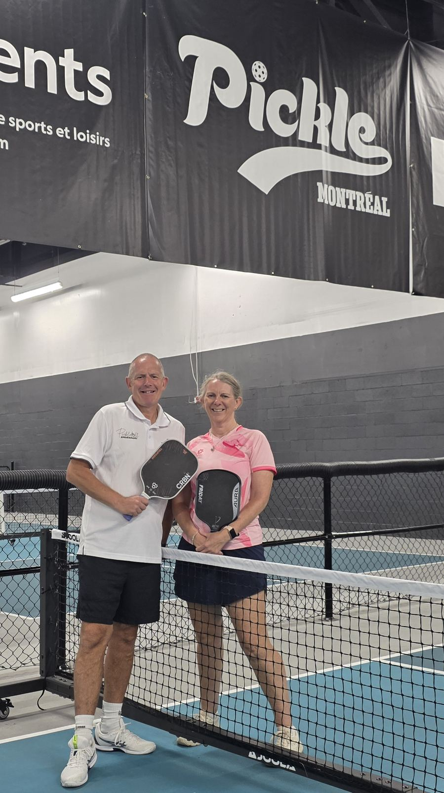

Our base here was Centre Pickle — an indoor facility that's easy to book into as a visitor and a solid year-round option once the outdoor season winds down.

An indoor facility we used as our base while in the city. Easy to book into as a visitor, and a solid option once the outdoor season winds down.
We visited twice, and got two very different experiences. On a sunny weekend day, open play was dead — we were the only ones there and ended up drilling for over two hours instead. On a weekday evening, it was a completely different scene: around 30 people showed up, with some genuinely strong 3.5+ players in the open-play mix.
Our take: if you're relying on open play here, go on a weekday evening — weekend daytime sessions can be hit or miss.
| Court quality | ★★★★★ |
| Quality of games | ★★★★☆ |
| Ease of joining | ★★★★☆ |
| Competitive level | ★★★★☆ |
| Value | ★★★★★ |
| Wanderers rating | 8/10 |
A newer downtown facility that's more than just pickleball — it's built as a full fitness club, with gym and yoga space alongside the courts. Free to play, with courts reservable and open to both members and non-members.
We stopped by to have a look, and the building alone makes it worth the visit — a historic Tudor mansion dating back to 1926, originally built as a badminton and squash club. Play is mainly geared towards members, and the pickleball courts themselves weren't great. It took a bit of work, but we did manage to set up a game — in the end, though, we didn't actually play.
Montreal has been steadily adding dedicated outdoor pickleball courts across its parks, including Pierre Elliott Trudeau Park in Côte-St-Luc, Hayward Park in LaSalle, and courts at Warren-Allmand and Martin-Luther-King parks. Good free options if you're around during the warmer months.